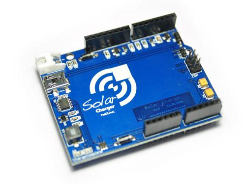
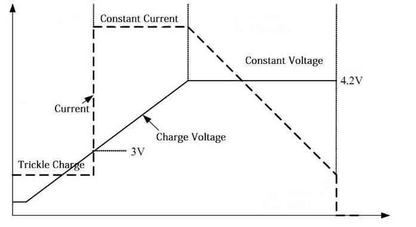
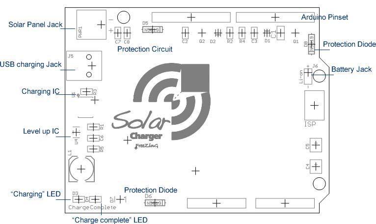
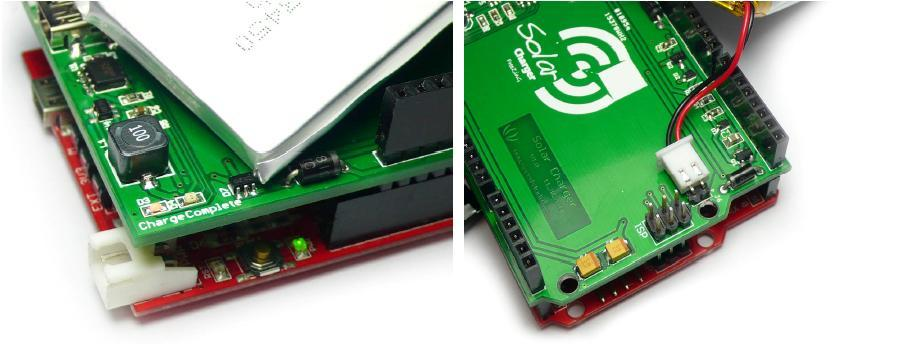
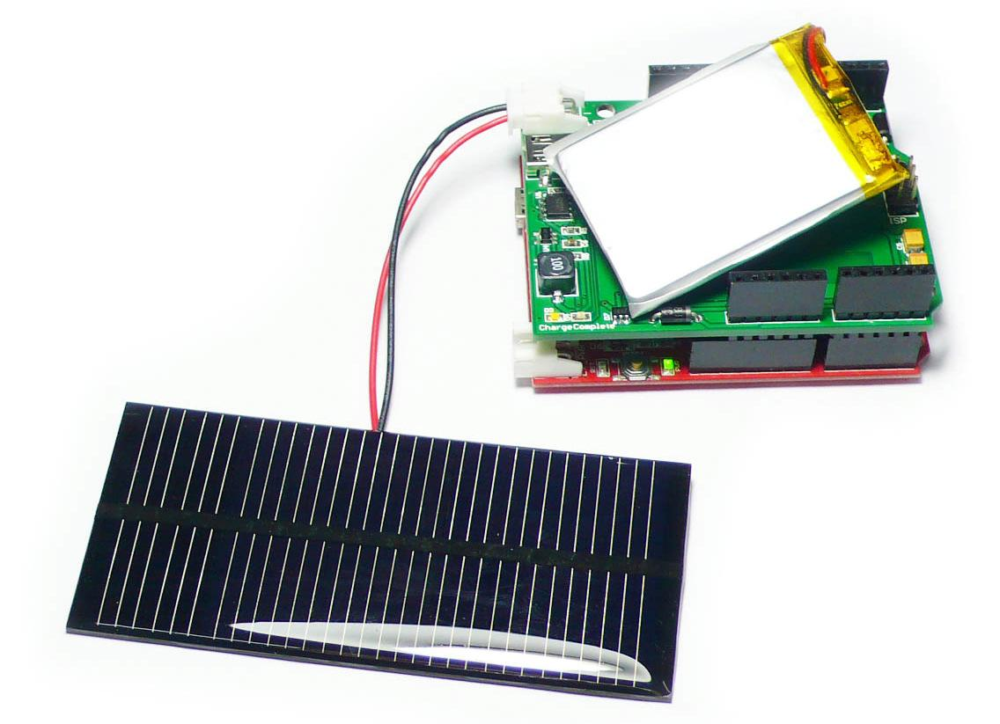

The solar charger is a stackable shield to Arduino compatible platforms, enables adaptive battery power and act as energy harvester for in-field charging. You may use various batteries just to shift up for 5V output, or put on Li-ion battery and solar panel to form an autonomous sensor unit.
Model:INT107D3P

The warnings and wrong operations possible cause dangerous.
| PCB size | 5.3 x 6.9 x 0.16 cm |
| Indicators | Charging ,complete |
| Power supply | 4.4VDV-6VDC |
| Power Connector | Mini USB / JST |
| RoHS | YES |
| Specification | Min | Norm | Max | Unit |
|---|---|---|---|---|
| Input voltage | 4.4 | 5 | 6 | VDC |
| Low power threshold | 3.7 | 3.9 | VDC | |
| Charge voltage | 4.158 | 4.2 | 4.242 | VDC |
| Precharge threshold | 2.9 | 3 | 3.1 | VDC |
| Specification | Min | Norm | Max | Unit |
|---|---|---|---|---|
| Battery voltage | 2.8 | 3.7 | 4.2 | VDC |
| Output voltage | 4.6 | 4.8 | 5.0 | VDC |
| Output current | 200 | 4.2 | 500 | mA |
| Level up efficiency | 70 | 80 | 87 | % |


1. Stacked setup, put battery between the pin headers, please note the polarity while connecting the wires to the battery jac.
(Red to +, black to -).

2. Solar panel or other energy sources should be connected to PWR1, solar panel Jack.
|  | Energy Source: (4V To 6V output) 5V Solar cell |
Includes important code snippet. Demo code like :
Demo code { }
The projects and application examples.
All the components used to produce the product.
Please list your question here:
If you have questions or other better design ideas, you can go to our forum or wish to discuss.
| Revision | Descriptions | Release Date |
|---|---|---|
| Solar Charger Shield v1.0 | Initial public release | May 01, 2010 |
Bug Tracker is the place you can publish any bugs you think you might have found during use. Please write down what you have to say, your answers will help us improve our products.
The Additional Idea is the place to write your project ideas about this product, or other usages you've found. Or you can write them on Projects page.
Here to buy Solar Charger Shield: http://www.seeedstudio.com/depot/solar-charger-shield-p-594.html?cPath=104_107
The resources need to be downloaded, like Eagle file, Demo code, project or other datasheet.
Other related products and resources.
This documentation is licensed under the Creative Commons Attribution-ShareAlike License 3.0 Source code and libraries are licensed under GPL/LGPL, see source code files for details.
Links to external webpages which provide more application ideas, documents/datasheet or software libraries
Copyright (c) 2008-2016 Seeed Development Limited (www.seeedstudio.com / www.seeed.cc){kind=link}